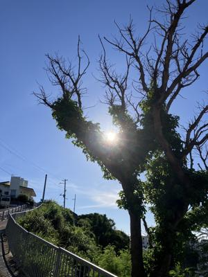
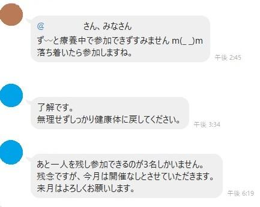

うるがいの話 ある日
最新: 飲み会【うるがいの話 ある日】とは 一日だけのプログです
『うるがいの話』の最新一日だけのプログで、通信料が少なく経済的だ。カニの画像をクリックすると全ての日付が載る『うるがいの話』サイトを表示します
|
|
【うるがいの話】 うるがい(ｳﾙｶﾞｲ urugai)とは、『もずくがに』の名前でとても大きくなります。 |
|---|---|
|
|
【カミマヤーの話】 猫のことを方言でマヤーといいます。カミマヤー（kamimayaa）とは、神の猫のことです。 |
|
【たながぁの音楽】 たながぁ（ﾀﾅｶﾞｰ tanagaa）とは手長えびのことで、何種類かあり大きいのは車 エビぐらいになります。 |

|
【ぶながぁの話】 ぶながぁ(ﾌﾞﾅｶﾞｰ bunagaa)とは、赤い髪の毛、赤い身体、そして身長は１ｍ２０ｃｍ ぐらい、川の蟹を食べているの目撃された。場所は沖縄県国頭郡大宜味村のと ある村僕の隣近所に住んでいる爺さんから、聞いた話です。 |
|
|
【ギーマの話】 ギーマ(giima)とは、山原の里山に咲くスズランに似た、 花を付けます。実は食べられます、 気が付くと口の周りが紫になっています。 |
2024年08月03日 (土）飲み会
16:32

もともと今日は、コドモの友達のお父さん方の親戚と食事が予定されていた
。が、延期になった。もと会社の同僚から、数か月前に昨日飲み会に誘われ
たが、連チャンの行事はヨメが・・・、で断った。月例で実行する先月の会
社の同期の飲みの参加の可否も参加しないと断っている。そもそも、毎月行
うとは・・・、ただＬＩＮＥの書き込みで同期の状態が分かる。ニシムさん
は、ずっとシカとしている。お呼びが無くなる前に、適当に参加しないとい
けないかなと思う。

懐かしい昭和の記憶（７１歳） 新聞の投稿より
もう６０年以上も前のことである。夏休みを利用して２泊３日ほど小学校で
宿泊し、リーダー養成を目的とした集団訓練があったことを覚えている。
私が小学６年生の時、リーダー研修が大宜味小中学校（廃校）でもあり、そ
の時は中学３年生までの４学年が、学校で宿泊した。コメ１合を持参して参
加するのだが、同級生が、寝ている間に顔に落書きをされたりして、一番下
の低学年だった私は楽しい記憶がない。ただ、オリエンテーションをしてい
る時に３年生の男性がヒィ、ヒィと騒ぎだした。鼻の近辺にムヒを塗ったら
しい出来事だけを鮮明に覚えている。なお、その後学校でのリーダー研修は
開催されなかったのでその年で最後だったのな。なお、ムヒを塗った男性は
ウインドサーフィンで台湾へ行くと冒険で、行方不明になっている。
『ＮＩＳＡ初心者に試練 株価急落で広がる動揺』
４月からＮＩＳＡに挑戦したヨメ！、元本より２千円下がったと嘆いている
おっと、ビットコインもスゴイ下がっている。ちなみに元本は２万円。
１６時２３分 ビットコインの総資産 ￥２６、２５３（↓１、５１６！）